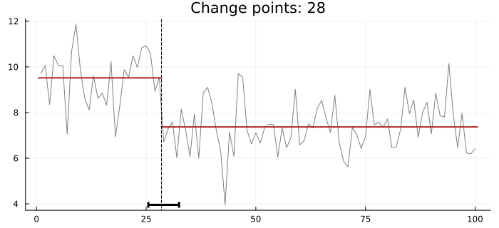
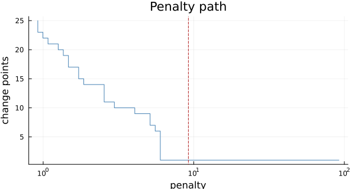
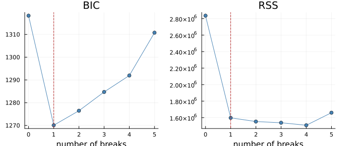
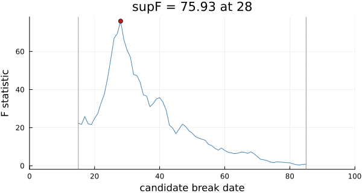
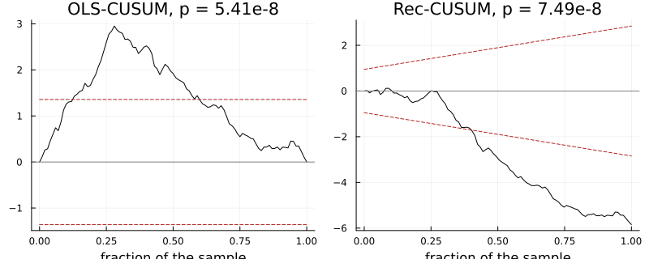

API: Change Points and Structural Breaks
Two traditions of one problem. Detection searches for the segmentation that minimises a cost plus a penalty per change: PELT, exact optimal partitioning and binary segmentation, with mean, variance, mean-and-variance, Poisson and exponential costs — changepoint's and ruptures' problem, reproduced exactly. Testing and dating follows Bai and Perron: the best segmentation for every number of breaks, BIC selection, confidence intervals for the break dates, the F-statistic path, and the CUSUM family of fluctuation tests — strucchange's problem, reproduced to rounding.
Breakpoints are the last index of the segment before each change. The supF/aveF/expF p-values and the MOSUM tests are not offered: their null distributions need tables that are not available under a compatible licence.
Detection
TSAnalytics.changepoints — Function
changepoints(y; cost=:mean, penalty=:bic, search=:pelt, min_segment_length=2,
mu=nothing, standardize=false, max_changepoints=20) -> ChangePointResultChange points in y: the segmentation minimising the total segment cost plus penalty per change.
Costs (changepoint's, from prefix sums so each segment is O(1)): :mean – a change in mean, the segment's residual sum of squares; :var – a change in variance about the known mean mu (default the sample mean); :meanvar – both, the Gaussian −2 log L; :poisson and :exponential – a change in rate.
The mean cost is not scale-invariant. It is a sum of squares, with the noise variance implicitly 1: on a series with variance 4, a BIC penalty of 2 log n acts like log n / 2 in standardised units, and far more changes are found. That is changepoint's and ruptures' convention, kept so their numbers reproduce; standardize = true divides y by a robust noise scale (the median absolute difference between neighbours, over √2 × 0.6745, which a mean shift barely moves) so the penalty means what it says.
Penalty: a number, or a name from cp_penalty.
Searches: :pelt (exact and fast; the default), :exact (optimal partitioning without pruning – slower, the same answer, the reference PELT is tested against), and :binseg (binary segmentation, greedy and not exact: it can miss a segmentation PELT finds, or find more changes). :pelt refuses penalty = :mbic: MBIC's per-segment log(length) makes splitting a segment raise the cost, which voids PELT's pruning – changepoint's own default (MBIC with PELT) returns a segmentation 2.07 worse on its own criterion than the optimum, without a warning. Use search = :exact.
Minimum segment length defaults to 2 (ruptures' default; the smallest that leaves a variance to estimate), raised to 2 for the variance costs. changepoint's is 1 for a mean change and strucchange's 15% of n (45 points at n = 300), and the choice decides the answer near the ends of a series. There is no jump: ruptures' default of 5 restricts change points to multiples of 5 and silently returns 95, 100, 200, 205 for true changes at 97 and 203.
Breakpoints are the last index of the segment before each change – changepoint's cpts() and strucchange's breakpoints. ruptures reports the same numbers (0-based exclusive ends) with n appended; its documentation reads them as the start of the next segment, which in 1-based Julia would be one more.
TSAnalytics.ChangePointResult — Type
ChangePointResultDetected change points, from changepoints: breakpoints (the last index of each segment but the last), the cost, penalty value and search used, the criterion reached, and each segment's mean (and variance, for the variance costs).
TSAnalytics.cp_penalty — Function
cp_penalty(name, n; cost=:mean) -> Float64The penalty per change point for a named criterion, with p the number of extra parameters a change adds (1 for a change in mean, variance, a Poisson or an exponential rate; 2 for mean and variance together):
| name | penalty |
|---|---|
:bic (= :sic) | (p + 1) log n |
:bic0 | p log n |
:mbic | (p + 2) log n, and a modified cost (below) |
:aic | 2(p + 1) |
:aic0 | 2p |
:hq | 2(p + 1) log log n |
:hq0 | 2p log log n |
changepoint's names and values, confirmed by its penalty = "Manual". MBIC is not only a penalty: it also adds log(length) of every segment to the cost, which changepoints does when given penalty = :mbic – and which breaks PELT's pruning, so PELT refuses it.
TSAnalytics.penalty_path — Function
penalty_path(r::ChangePointResult; penalties=nothing, mu=nothing)
-> (penalties, breakpoints, counts)The segmentation r's search finds at each penalty in penalties (default 60 values log-spaced from a tenth to ten times r.penalty) – the data behind changepoint's CROPS plot. counts against penalties is the elbow plot(r; penalty_path=true) draws; the full set of segmentations is returned as data with no recipe, since a per-penalty segment plot or a heatmap of positions against penalty are equally defensible renderings (the seasonal_subseries_plot precedent). Pass the mu used for a :var fit; an MBIC fit keeps its per-segment term.
julia> using TSAnalytics
julia> y = vcat(zeros(50), fill(3.0, 50)) .+ 0.5 .* sin.(1:100);
julia> p = penalty_path(changepoints(y); penalties = [1.0, 10.0, 1000.0]);
julia> p.counts
3-element Vector{Int64}:
1
1
0Breaks: dating and testing
TSAnalytics.breakpoints — Function
breakpoints(y; X=nothing, h=0.15, max_breaks=nothing) -> BreakpointsResultBai & Perron's (2003) dynamic programme: for every number of breaks m up to max_breaks, the break dates minimising the total residual sum of squares of a regression of y on X (default a constant: a change in mean) fitted separately in each segment, every segment at least h long (h < 1 is a fraction of n, floored; default 15%, as strucchange). Nothing is decided during the search; the number of breaks is chosen afterwards by BIC, n log(RSS/n) + n(log 2π + 1) + log(n)(k + 1)(m + 1) for k regressors, and the whole path is returned. max_breaks defaults to ⌈n/h⌉ − 2. This is strucchange's breakpoints, and its RSS and BIC table is reproduced to rounding.
Note the default h: at n = 300 no segment can be shorter than 45 points, so changes near either end, or closer than 45 apart, cannot be found at all – the reason strucchange sees nothing in a series that changepoints splits at 3 and 297.
TSAnalytics.BreakpointsResult — Type
BreakpointsResultThe Bai–Perron breakpoint path, from breakpoints: for every number of breaks m = 0 … max_breaks, the optimal break dates (dates[m + 1]), the residual sum of squares rss and bic; the selected breaks (minimum BIC), the minimum segment length h, and the regression design.
TSAnalytics.break_confint — Function
break_confint(r::BreakpointsResult; breaks=nothing, level=0.95) -> Matrix{Int}Confidence intervals for the break dates (Bai 1997): one row per break, [lower, date, upper]. The distribution of the estimated date is that of the location of the maximum of a two-sided Brownian motion with drift, whose distribution function Bai gives in closed form – no table. Segments on either side of a break may differ in regressor moments and in error variance (strucchange's defaults het.reg = het.err = TRUE), so the interval need not be symmetric. breaks picks the number of breaks (default the BIC choice). Refused when there are no breaks to date.
TSAnalytics.fstats — Function
fstats(y; X=nothing, from=0.15, to=nothing) -> FStatsResultFor every candidate break date τ from from to to (fractions of n are floored; to defaults to n − from), the statistic for a break in all coefficients of the regression of y on X (default a constant) at τ: (RSS_whole − RSS_split) / (RSS_split / (n − 2k)). With k coefficients this is k times the classical Chow F – the Wald form strucchange reports; the two coincide for a change in mean (k = 1). The summaries are Andrews' supF, and Andrews & Ploberger's aveF and expF = log(mean(exp(F/2))).
No p-values. Their null distribution is non-standard, and the response-surface tables strucchange uses for it (Hansen 1997) are not available under a compatible licence. The statistics are exact.
TSAnalytics.FStatsResult — Type
FStatsResultThe F-statistic path of fstats: stats[j] tests a single break after observation dates[j]; supF, aveF and expF summarise it, and argmax is the most likely break date.
TSAnalytics.efp — Function
efp(y; X=nothing, type=:ols_cusum) -> EFPResultAn empirical fluctuation process for the stability of the regression of y on X (default a constant), and its test (Kuan & Hornik 1995; Zeileis et al. 2002). Under stability each process behaves like a Brownian bridge or motion; a break shows as an excursion.
:ols_cusum– cumulated OLS residuals, scaled by their standard deviation and√n(Ploberger & Krämer 1992): a Brownian bridge.:rec_cusum– cumulated recursive residuals (Brown, Durbin & Evans 1975): a Brownian motion, judged against boundaries that widen as1 + 2t.:score_cusum– cumulated scores of the Gaussian likelihood, for each coefficient and the variance, decorrelated: ak + 1-dimensional Brownian bridge. The only one of these that sees a change in variance.:re– the fluctuation of the recursive estimates about the full-sample estimate: ak-dimensional Brownian bridge.
The statistic is the largest absolute value of the process (divided by the boundary for :rec_cusum); its p-value comes from the limiting process in closed form – the Kolmogorov series for a bridge, Ploberger & Krämer's formula for the motion – so no table is needed. The tails are computed directly, so a p-value of 1e-20 is reported as such rather than as exactly zero (strucchange prints 0). The MOSUM processes, whose p-values need tables, are not offered.
TSAnalytics.EFPResult — Type
EFPResultAn empirical fluctuation process, from efp: the process (time × dimensions, starting at 0), its type, the test statistic, pvalue, and whether that p-value is only a bound (pvalue_bound).
TSAnalytics.efp_boundary — Function
efp_boundary(r::EFPResult; alpha=0.05) -> Vector{Float64}The critical boundary of the fluctuation test at level alpha, one value per row of r.process: the constant λ with P(sup |B| > λ) = alpha for the bridge processes, and λ(1 + 2t) for the recursive CUSUM. The limiting distributions are in closed form, so this is exact, not simulated; r.statistic > λ exactly when r.pvalue < alpha.
julia> using TSAnalytics
julia> b = efp_boundary(efp(randn(50)));
julia> round(b[1], digits = 4)
1.3581Plotting
The Nile's annual flow, 1871–1970, has one break: the Aswan dam, begun in
- The segmented series shows the segment means as a step, the break,
and Bai's confidence interval for its date as a bar at the foot. Here that is observations 25 to 32, 1895 to 1902, strucchange's interval exactly.
using TSAnalytics, Plots, DelimitedFiles
nile = Float64.(readdlm(TSAnalytics.NILE, ',', skipstart = 1)[:, end])
cp = changepoints(nile; standardize = true)
bp = breakpoints(nile)
plot(cp; confint = break_confint(bp), size = (700, 320))
penalty_path = true draws the number of change points against the penalty instead (data from penalty_path):
plot(cp; penalty_path = true, size = (600, 320))
The Bai–Perron selection curve: BIC and RSS against the number of breaks.
plot(bp; size = (700, 300))
The F statistic for one break at each date. No critical boundary is drawn: the supF null distribution has no closed form, and its tables are not available.
plot(fstats(nile); size = (600, 320))
The fluctuation processes do have closed-form boundaries (efp_boundary), so the test can be read off the plot: the process leaving the band is the test rejecting.
plot(plot(efp(nile)), plot(efp(nile; type = :rec_cusum)); layout = (1, 2), size = (800, 320))
diagnostic_plot(bp) gives the residual panels of the selected segmentation.